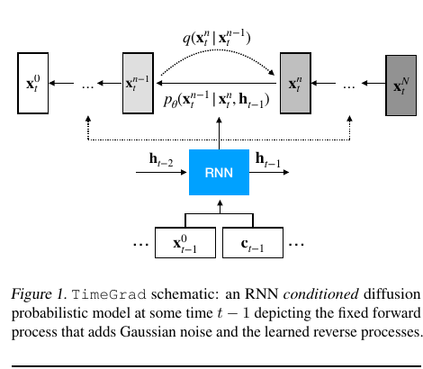
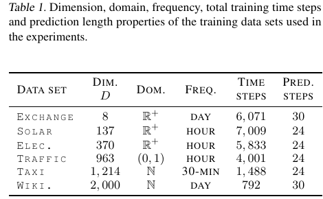
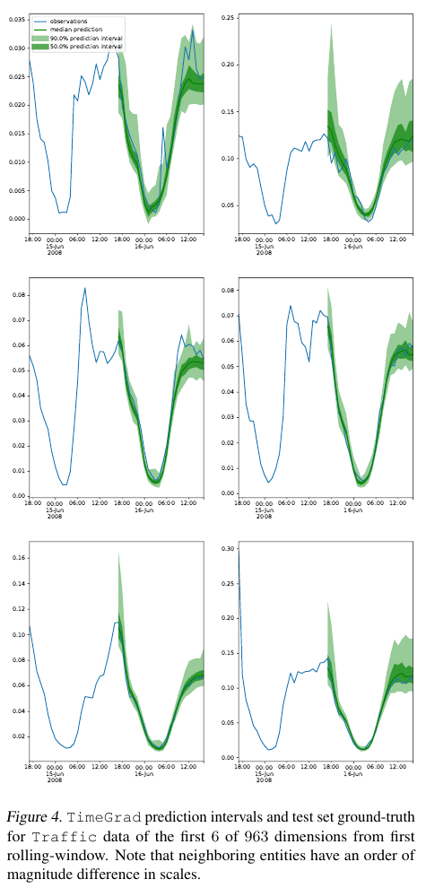

为什么需要 TimeGrad
这篇论文想解决的不是“点预测更准一点”，而是：很多条相关时间序列一起预测时，怎样生成完整的未来概率分布。
这篇论文的核心思路
问题
未来某个时间点是一个高维向量，不是一个孤立数字。太阳能站点、交通传感器、网页访问量都会一起波动。
Gap
很多模型会预设一个输出分布族，比如 Gaussian、copula 或 flow。这样概率密度容易算，但未来分布的形状也被限制住了。
做法
TimeGrad 在每个未来时间步使用一个条件 diffusion model。
把论文主张翻译成人话
用自回归 RNN 状态
条件化一个去噪扩散模型
从而采样多变量未来分布RNN 负责判断：当前时间序列处在什么上下文里。
扩散网络负责判断：怎样把噪声变成一个合理的未来向量。
重复采样很多次，就能得到很多条可能未来，不确定性也就显现出来了。
如果一个团队只需要明天平均用电量这一个数，TimeGrad 哪个优势最不关键？
扩散模型变成预测引擎
扩散部分学的是一个反向过程：从噪声开始，在当前时间序列上下文条件下，反复去噪，生成一个未来样本。
把一个未来时间步看成小型生成任务
核心公式的压缩版
x_n = sqrt(alpha_bar_n) x_0
+ sqrt(1 - alpha_bar_n) epsilon
epsilon_theta(x_n, h, n) -> epsilon把真实向量拿出来，按扩散层级混入高斯噪声。
扩散层级 n 控制这个向量被破坏到什么程度。
模型训练目标是恢复噪声，同时把 RNN 状态作为上下文。
x_0某个时间步的干净观测向量h概括历史信息的 RNN hidden staten当前扩散噪声层级为什么训练噪声预测器，而不是只直接输出均值预测？
训练和采样是一对镜像过程
训练时问：网络能不能识别加入的噪声？采样时问：网络能不能一步步移除噪声，生成一个未来？
图 1：一张图看完整方法

底部：RNN 接收上一时刻观测和协变量。
中间：hidden state h 作为条件，进入扩散反向模型。
顶部：固定前向链负责加噪，学习到的反向链负责去噪。
算法 2 的白话版

先从最高扩散层级的随机噪声开始。
沿着噪声层级往回走，用 epsilon_theta 判断去噪方向。
除最后一步外，每一步还会注入少量随机项，保留不确定性。
最终输出的是时间 t 的一个未来向量样本。
模型需要很多反向步骤，通常还要采样很多条轨迹。所以论文里关于扩散长度 N 的消融实验非常关键。
如果推理时只采样 5 条轨迹，而不是 100 条，最可能先变差的是什么？
架构拆解
TimeGrad 有两个协作部件：一个自回归上下文模型，一个条件去噪网络。
点击组件看看它们负责什么
预测流水线
残差块细节

加噪后的向量通过卷积层进入网络。
扩散索引 n 会被 embedding，让网络知道当前噪声层级。
RNN 状态 h 作为条件信息注入网络。
Residual 和 skip path 帮助深层去噪块保持可训练。
如果从去噪网络里移除 h_{t-1}，最准确的失败解释是什么？
实验中的证据链怎么读
实验结果支持 TimeGrad 是一个强概率预测器，尤其是在使用分布感知指标评估时。
先看数据规模

维度 D 从 8 到 2000 不等。
数据频率包括日级、小时级和 30 分钟级。
预测长度是 24 或 30 步，所以样本必须形成完整未来路径。
再读基准测试表

主张：灵活采样能改善多变量概率预测。
指标：CRPS_sum，一种分布评分。
结果：TimeGrad 在多数数据集上最好或接近最好。
注意：这张表没有衡量延迟或内存成本。
消融：扩散步数要多少？

当 N 从很小的值增大时，预测质量明显改善。
论文报告说，N 约等于 10 时已经有不错表现。
最优设置大约在 N = 100，但更大并不自动更好。
如果一家公司想在线部署 TimeGrad，表 2 最缺哪类证据？
边界、复现和复用
这个方法很强，但证据必须和假设一起搬走：自回归采样、baseline 选择、预处理方式、扩散超参数都不能被忽略。
预测区间有用，但不是完整证明

蓝色线是真实观测；绿色带是预测区间。
这张图说明模型输出的是不确定性区间，而不只是中位数曲线。
它是定性证据。更强的结论仍然依赖跨数据集的 CRPS 结果。
复现清单
Data数据集版本、rolling window、缩放、缺失值、训练/验证/测试边界ModelLSTM hidden size、残差块、dilation schedule、embedding、lag featuresDiffusion噪声 schedule、扩散长度 N、采样轨迹数 S、随机种子EvalCRPS_sum 实现、baseline 实现、重复运行统计方式这篇论文没有证明什么
它没有证明 TimeGrad 总是更快、在所有领域总是更好，也没有证明它已经能稳健处理极端事件和分布漂移。它证明的是：在论文测试设定下，自回归扩散预测是一个很强的基准方法。